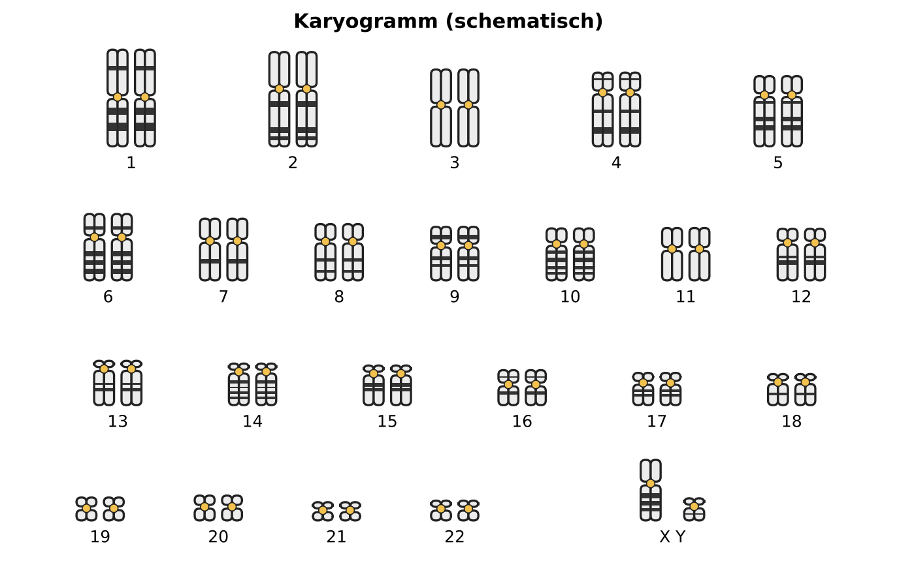

So nutzen Sie die Hilfen: Versuchen Sie es erst allein. Öffnen Sie dann Hilfe 1, danach Hilfe 2. Die Lösung dient zur Kontrolle – vergleichen Sie sie mit Ihrer eigenen Antwort und verbessern Sie diese im Hefter oder im PDF.
Aufgabe 1: Wie wird die DNA verpackt?
- Ordnen Sie den Ziffern ① bis ⑤ in Abb. 1 die folgenden Begriffe zu: DNA-Doppelhelix, Histon, Metaphasechromosom, Nucleosom, Nucleosomenkette!
- Beschreiben Sie mithilfe der Größenangaben in Abb. 1, wie stark die DNA vom Doppelstrang (2 nm) bis zum Metaphasechromosom (1400 nm Durchmesser) verdichtet wird!
- Erklären Sie, warum die DNA vor einer Zellteilung besonders stark verdichtet werden muss!
Hilfe 1
Gehen Sie vom Kleinsten zum Größten: Was ist die „nackte“ Erbsubstanz? Woran wird sie gewickelt? Was entsteht, wenn sich viele dieser Einheiten aneinanderreihen?
Hilfe 2
Reihenfolge der Verpackung: DNA-Doppelhelix → Histon (Protein-„Lockenwickler“) → DNA um Histone gewickelt = Nucleosom → Kette aus Nucleosomen → weitere Spiralisierung → Metaphasechromosom. Für c): Was passiert in der Mitose mit den Chromosomen?
Lösung (erst nach eigenem Versuch öffnen!)
a) ① DNA-Doppelhelix, ② Histon, ③ Nucleosom, ④ Nucleosomenkette, ⑤ Metaphasechromosom (aus zwei Chromatiden).
b) Der DNA-Doppelstrang ist nur ca. 2 nm dick. Er wird um Histone gewickelt (Nucleosomen), die Nucleosomenkette (ca. 30 nm) spiralisiert sich weiter (ca. 300 nm), bis das Metaphasechromosom ca. 1400 nm (1,4 µm) breit ist. Gleichzeitig wird der DNA-Faden etwa um das 10 000-Fache verkürzt.
c) Bei der Zellteilung müssen die Chromosomen vom Spindelapparat bewegt und exakt auf die Tochterzellen verteilt werden. Lange, entspiralisierte DNA-Fäden würden sich verknäueln und könnten zerreißen. Die stark verdichtete Transportform lässt sich dagegen sicher und vollständig verteilen.
b) Der DNA-Doppelstrang ist nur ca. 2 nm dick. Er wird um Histone gewickelt (Nucleosomen), die Nucleosomenkette (ca. 30 nm) spiralisiert sich weiter (ca. 300 nm), bis das Metaphasechromosom ca. 1400 nm (1,4 µm) breit ist. Gleichzeitig wird der DNA-Faden etwa um das 10 000-Fache verkürzt.
c) Bei der Zellteilung müssen die Chromosomen vom Spindelapparat bewegt und exakt auf die Tochterzellen verteilt werden. Lange, entspiralisierte DNA-Fäden würden sich verknäueln und könnten zerreißen. Die stark verdichtete Transportform lässt sich dagegen sicher und vollständig verteilen.
Aufgabe 2: Bau der Chromosomen
- Entscheiden Sie durch Ankreuzen, ob die Aussagen richtig oder falsch sind, und korrigieren Sie falsche Aussagen eindeutig! (Nur ein „nicht“ einzufügen reicht nicht.)
- Geben Sie an, wie viele Chromosomen und wie viele DNA-Doppelstränge eine menschliche Körperzelle vor und nach der Replikation besitzt, und begründen Sie Ihre Angaben!
- Zeichnen Sie ein akrozentrisches Zwei-Chromatid-Chromosom und beschriften Sie es mit vier Fachbegriffen!
Hilfe 1
a) Vergleichen Sie jede Aussage mit Text und Abb. 2. Achten Sie auf ähnlich klingende Begriffe: Centromer – Centrosom – Centriol. b) Ein Chromosom besteht aus einem oder zwei Chromatiden – und jedes Chromatid enthält genau einen DNA-Doppelstrang.
Hilfe 2
a) Was zählt man als „ein Chromosom“ – das Chromatid oder das ganze Gebilde am Centromer? b) Die Zahl der Chromosomen ändert sich durch die Replikation nicht! c) Akrozentrisch: Das Centromer liegt nahe am Ende, der p-Arm ist also sehr kurz.
Lösung (erst nach eigenem Versuch öffnen!)
a) 1. falsch – Die Schwesterchromatiden werden durch das Centromer verbunden. 2. falsch – Chromosomen bestehen aus einem Chromatid (vor der Replikation) oder aus zwei Chromatiden (nach der Replikation). 3. richtig. 4. falsch – Die Chromosomenzahl bleibt gleich; jedes Chromosom besteht nach der Replikation aber aus zwei Chromatiden. 5. richtig (die Schwesterchromatiden sind durch Replikation entstanden und identisch).
b) Vor der Replikation: 46 Chromosomen, 46 DNA-Doppelstränge (Ein-Chromatid-Chromosomen). Nach der Replikation: 46 Chromosomen, 92 DNA-Doppelstränge (Zwei-Chromatid-Chromosomen). Bei der Replikation wurde jeder DNA-Doppelstrang verdoppelt; die beiden Kopien bleiben am Centromer verbunden, daher ändert sich die Chromosomenzahl nicht.
c) Zeichnung: zwei parallele Schwesterchromatiden, Centromer nahe am oberen Ende (sehr kurzer p-Arm, langer q-Arm); Beschriftungen z. B. Schwesterchromatiden, Centromer, p-Arm, q-Arm, Telomere.
b) Vor der Replikation: 46 Chromosomen, 46 DNA-Doppelstränge (Ein-Chromatid-Chromosomen). Nach der Replikation: 46 Chromosomen, 92 DNA-Doppelstränge (Zwei-Chromatid-Chromosomen). Bei der Replikation wurde jeder DNA-Doppelstrang verdoppelt; die beiden Kopien bleiben am Centromer verbunden, daher ändert sich die Chromosomenzahl nicht.
c) Zeichnung: zwei parallele Schwesterchromatiden, Centromer nahe am oberen Ende (sehr kurzer p-Arm, langer q-Arm); Beschriftungen z. B. Schwesterchromatiden, Centromer, p-Arm, q-Arm, Telomere.
Basiswissen: Wo liegen die Chromosomen?
- Nennen Sie den Zellbestandteil, in dem die Chromosomen liegen, und begründen Sie, warum sich reife rote Blutkörperchen nicht für ein Karyogramm eignen!
Hilfe 1
Schauen Sie im Basiswissen „Die eukaryotische Zelle“ in die Tabelle: Welcher Zellbestandteil enthält die DNA?
Hilfe 2
Ein Karyogramm zeigt die Chromosomen einer Zelle, die sich gerade teilt. Was fehlt reifen roten Blutkörperchen – und was folgt daraus für die Teilung?
Lösung (erst nach eigenem Versuch öffnen!)
Die Chromosomen liegen im Zellkern, der die DNA enthält („Steuerzentrale“). Reife rote Blutkörperchen besitzen keinen Zellkern und damit auch keine Chromosomen; sie teilen sich nicht. Deshalb kann man aus ihnen kein Karyogramm erstellen.
Aufgabe 3: Das Karyogramm des Menschen
- Erstellen Sie im Trainer (Karyogramm-Puzzle) selbst ein Karyogramm!
- Erläutern Sie die drei Ordnungskriterien eines Karyogramms!
- Geben Sie den Karyotyp der Person aus Abb. 3b an und begründen Sie Ihre Angabe zum Geschlecht!
- Entscheiden Sie anhand des echten Karyogramms in Abb. 3a, ob die Zelle von einem Mann oder einer Frau stammt, und begründen Sie Ihre Entscheidung!
Hilfe 1
Im Text sind die Ordnungskriterien fett gedruckt. Für den Karyotyp: Zählen Sie alle Chromosomen und schauen Sie sich das letzte Paar genau an.
Hilfe 2
Karyotyp-Schreibweise: Gesamtzahl der Chromosomen, Komma, Gonosomen – z. B. 46,XX. Homolog ≠ identisch!
Lösung (erst nach eigenem Versuch öffnen!)
b) Die Chromosomen werden nach (1) Größe, (2) Lage des Centromers und (3) Bandenmuster nach dem Anfärben geordnet und paarweise nummeriert (1 = größtes Chromosom).
c) 46,XY – männlich, da ein Y-Chromosom vorhanden ist (X und Y sind nicht gleich groß).
d) Abb. 3a stammt von einem Mann: In der letzten Reihe des geordneten Karyogramms liegen ein großes X-Chromosom und ein sehr kleines Y-Chromosom, die kein gleich aussehendes Paar bilden.
c) 46,XY – männlich, da ein Y-Chromosom vorhanden ist (X und Y sind nicht gleich groß).
d) Abb. 3a stammt von einem Mann: In der letzten Reihe des geordneten Karyogramms liegen ein großes X-Chromosom und ein sehr kleines Y-Chromosom, die kein gleich aussehendes Paar bilden.

Aufgabe 4: Chromosomensätze im Vergleich
- Berechnen Sie für jede Art die Anzahl der Chromosomen im haploiden Chromosomensatz (n)!
- Beurteilen Sie die Aussage: „Je mehr Chromosomen ein Lebewesen besitzt, desto höher entwickelt ist es.“!
- Erklären Sie, warum die Chromosomenzahl in diploiden Körperzellen in der Regel eine gerade Zahl ist!
Hilfe 1
n ist immer die Hälfte von 2n.
Hilfe 2
Vergleichen Sie z. B. Mensch und Kartoffel oder Mensch und Farn. Für c): Woraus setzt sich der diploide Satz zusammen?
Lösung (erst nach eigenem Versuch öffnen!)
a) Mensch 23, Schimpanse 24, Haushund 39, Pferd 32, Taufliege 4, Kartoffel 24, Pferdespulwurm 1, Natternzungen-Farn ca. 630.
b) Die Aussage ist falsch: Die Kartoffel hat gleich viele Chromosomen wie der Schimpanse, der Haushund mehr als der Mensch und der Farn ein Vielfaches. Die Chromosomenzahl sagt nichts über die Komplexität eines Lebewesens aus, entscheidend ist u. a. welche Gene vorhanden sind und wie sie reguliert werden.
c) Diploide Zellen enthalten zwei Chromosomensätze – einen von der Mutter, einen vom Vater. Jedes Chromosom liegt also doppelt vor (homologe Paare), daher ist 2n gerade.
b) Die Aussage ist falsch: Die Kartoffel hat gleich viele Chromosomen wie der Schimpanse, der Haushund mehr als der Mensch und der Farn ein Vielfaches. Die Chromosomenzahl sagt nichts über die Komplexität eines Lebewesens aus, entscheidend ist u. a. welche Gene vorhanden sind und wie sie reguliert werden.
c) Diploide Zellen enthalten zwei Chromosomensätze – einen von der Mutter, einen vom Vater. Jedes Chromosom liegt also doppelt vor (homologe Paare), daher ist 2n gerade.
Aufgabe 5: Eine Kröte mit drei Chromosomensätzen
- Beschreiben Sie das Karyogramm der Kröte und vergleichen Sie es mit dem Karyogramm eines Menschen (Abb. 3b)!
- Geben Sie den Chromosomensatz der Kröte in der Schreibweise „… n = …“ an und ermitteln Sie, wie viele Chromosomen ein einfacher Chromosomensatz enthält!
- Keimzellen enthalten normalerweise einen einfachen (haploiden) Chromosomensatz. Stellen Sie eine Hypothese auf, warum es für diese Kröte schwierig sein könnte, Keimzellen mit genau gleich vielen Chromosomen zu bilden!
Hilfe 1
a) Zählen Sie die Chromosomen und schauen Sie, wie oft jedes gleich aussehende Chromosom vorkommt. Wie ist das beim Menschen? Gibt es bei der Kröte erkennbare Gonosomen? b) Beim Menschen schreibt man 2n = 46.
Hilfe 2
a) Die Kröte besitzt 33 Chromosomen; jedes Chromosom liegt dreimal vor (je drei homologe Chromosomen), beim Menschen zweimal. b) Drei Chromosomensätze = 3n. c) Was müsste mit drei homologen Chromosomen passieren, wenn jede Keimzelle gleich viele bekommen soll?
Lösung (erst nach eigenem Versuch öffnen!)
a) Das Karyogramm der Kröte zeigt 33 Chromosomen in 11 Gruppen. Jedes Chromosom kommt dreimal vor, die drei homologen Chromosomen gleichen sich in Größe und Lage des Centromers. Beim Menschen liegen 46 Chromosomen als 23 Paare vor (22 Autosomenpaare, 1 Gonosomenpaar), jedes Chromosom also zweimal. Bei der Kröte sind keine Gonosomen erkennbar.
b) 3n = 33 (triploid); ein einfacher Chromosomensatz enthält n = 11 Chromosomen. Die verwandten Krötenarten sind diploid (2n = 22).
c) Hypothese: Bei der Keimzellbildung muss der Chromosomensatz halbiert werden. Beim Menschen werden dafür die Paare homologer Chromosomen getrennt: Jede Keimzelle erhält ein Chromosom jedes Paares. Drei homologe Chromosomen lassen sich aber nicht gleichmäßig auf zwei Zellen verteilen (33 ist nicht durch 2 teilbar). Es könnten Keimzellen mit unterschiedlich vielen Chromosomen entstehen. Info: Bufo baturae hat dafür einen besonderen Mechanismus entwickelt; wie er funktioniert, lernen Sie in Modul 3 kennen (Meiose).
b) 3n = 33 (triploid); ein einfacher Chromosomensatz enthält n = 11 Chromosomen. Die verwandten Krötenarten sind diploid (2n = 22).
c) Hypothese: Bei der Keimzellbildung muss der Chromosomensatz halbiert werden. Beim Menschen werden dafür die Paare homologer Chromosomen getrennt: Jede Keimzelle erhält ein Chromosom jedes Paares. Drei homologe Chromosomen lassen sich aber nicht gleichmäßig auf zwei Zellen verteilen (33 ist nicht durch 2 teilbar). Es könnten Keimzellen mit unterschiedlich vielen Chromosomen entstehen. Info: Bufo baturae hat dafür einen besonderen Mechanismus entwickelt; wie er funktioniert, lernen Sie in Modul 3 kennen (Meiose).
Wahlaufgabe W1: Antworten aus einer Stegreifaufgabe
- Beurteilen Sie jede Antwort, indem Sie richtig oder falsch ankreuzen, und verbessern Sie falsche Antworten!
Hilfe 1
Ein Chromosomensatz = von jedem Chromosomentyp genau ein Exemplar. Homolog heißt nicht identisch.
Hilfe 2
Prüfen Sie jede Aussage: Wird über Chromosomen oder über Chromatiden gesprochen? Sind Keimzellen haploid oder diploid?
Lösung (erst nach eigenem Versuch öffnen!)
Frage 1: a) zu ungenau (nicht nur Menschen, keine Erklärung). b) falsch: Geschlechtszellen sind haploid und besitzen halb so viele (Ein-Chromatid-)Chromosomen wie Körperzellen. c) falsch: Homologe Chromosomen gehören immer zu verschiedenen Chromosomensätzen. d) richtig. e) falsch: Der Chromosomensatz ist über Chromosomen definiert, nicht über Chromatiden.
Frage 2: a) falsch (Verwechslung mit „Ein-Chromatid-Chromosom“). b) zu ungenau. c) richtig. d) falsch: Homologe Chromosomen sind nicht identisch, sie können unterschiedliche Varianten der Erbinformation tragen.
Frage 2: a) falsch (Verwechslung mit „Ein-Chromatid-Chromosom“). b) zu ungenau. c) richtig. d) falsch: Homologe Chromosomen sind nicht identisch, sie können unterschiedliche Varianten der Erbinformation tragen.
Wahlaufgabe W2: Telomere und Altern
- Stellen Sie eine Hypothese auf, warum Körperzellen nach etwa 50 Teilungen ihre Teilungsfähigkeit verlieren!
- Erläutern Sie, warum eine aktive Telomerase für Krebszellen ein „Vorteil“ ist!
Hilfe 1
Was passiert mit den Enden der Chromosomen bei jeder Replikation?
Hilfe 2
Wenn die Telomere aufgebraucht sind, wären als Nächstes Gene betroffen. Krebszellen teilen sich unkontrolliert – was brauchen sie dafür?
Lösung (erst nach eigenem Versuch öffnen!)
a) Hypothese: Bei jeder Replikation verkürzen sich die Telomere. Unterschreiten sie eine Mindestlänge, würden bei weiteren Teilungen wichtige Gene beschädigt. Die Zelle stellt die Teilung daher ein (Schutzmechanismus).
b) Krebszellen teilen sich unkontrolliert sehr häufig. Durch die Telomerase werden ihre Telomere immer wieder verlängert, sodass die Teilungsgrenze aufgehoben ist – die Zellen werden quasi „unsterblich“.
b) Krebszellen teilen sich unkontrolliert sehr häufig. Durch die Telomerase werden ihre Telomere immer wieder verlängert, sodass die Teilungsgrenze aufgehoben ist – die Zellen werden quasi „unsterblich“.
Sichern: Fachsprache und Denkfallen
Erst selbst erklären, dann vergleichen. Übernehmen Sie die Begriffe in Ihr Glossar.
Lösung: Fachbegriffe
- Nucleosom: DNA-Abschnitt, der um eine Gruppe von Histonen (Proteine) gewickelt ist; Grundeinheit der DNA-Verpackung.
- Chromatid: Ein Längsstrang eines Chromosoms; enthält genau einen DNA-Doppelstrang.
- Centromer: Einschnürung des Chromosoms, an der die beiden Schwesterchromatiden zusammenhängen; teilt das Chromosom in p- und q-Arm.
- Telomer: Ende eines Chromosoms aus vielen Wiederholungen einer kurzen DNA-Sequenz; wird bei jeder Replikation etwas kürzer.
- homologe Chromosomen: Chromosomenpaar gleicher Größe, Gestalt und gleichen Bandenmusters mit Informationen für die gleichen Merkmale; eines von der Mutter, eines vom Vater.
- Gonosomen: Geschlechtschromosomen (X und Y); Frau XX, Mann XY.
- diploid / haploid: zwei Chromosomensätze (2n = 46, Körperzellen) / ein Chromosomensatz (n = 23, Keimzellen).
- Karyotyp: Kurzangabe der Chromosomenzahl und der Gonosomen, z. B. 46,XX.
Lösung: Denkfallen
- „Chromosomen haben immer die Form eines X.“ – falsch – Die X-Form zeigt ein stark verdichtetes Zwei-Chromatid-Chromosom. Vor der Replikation besteht ein Chromosom aus nur einem Chromatid; außerhalb der Teilung ist die DNA kaum verdichtet.
- „Homologe Chromosomen sind die beiden Schwesterchromatiden eines Chromosoms.“ – falsch – Homologe Chromosomen stammen von Mutter und Vater und können verschiedene Varianten tragen. Schwesterchromatiden sind identische Kopien eines Chromosoms nach der Replikation.
- „Keimzellen des Menschen enthalten 23 Chromosomenpaare.“ – falsch – Keimzellen enthalten 23 einzelne Chromosomen (einen Chromosomensatz), also keine Paare.
Fallakte · Befund Kapitel 1
Familie Sommer · Ein Karyogramm für das Baby – Kapitel 1: „Was sieht man eigentlich in einem Karyogramm?“
- Was ist ein Karyogramm?
- Anzahl und Art der Chromosomen bei einem Kind ohne Chromosomenveränderung
- Woran erkennt man im Karyogramm das Geschlecht?
Tipp
Lesen Sie das Kapitel 1 der Fallakte noch einmal und suchen Sie in den Pflichtaufgaben dieses Moduls die passenden Fachbegriffe.
Lösung (erst nach eigenem Versuch öffnen!)
- Ein Karyogramm ist die geordnete Darstellung aller Chromosomen einer Körperzelle in der Metaphase: Die Chromosomen werden fotografiert und paarweise nach Größe, Lage des Centromers und Bandenmuster angeordnet.
- 46 Chromosomen (2n = 46): 22 Paare Autosomen und 2 Gonosomen.
- An den Gonosomen: Zwei X-Chromosomen (46,XX) bedeuten ein Mädchen, ein X- und ein Y-Chromosom (46,XY) einen Jungen.